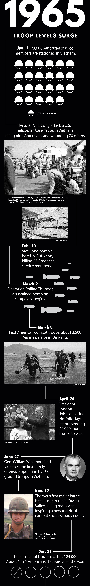

Marines rush ashore at Da Nang in South Vietnam on March 18, 1965. About two weeks earlier, the first American ground troops were ordered into the country. The U.S. military's advisory role was over.
Some details he remembers like it was yesterday: The oppressive humidity that morning. The odd combination of smells – grilled meat and human feces – that always seemed to hang in the air around Saigon. The extra minute spent loading film into his new 35 mm camera before climbing into a taxi. The calm in front of the U.S. Embassy as his cab rolled past. The incredible force and sound of the explosion a few seconds later.
Other moments have blurred over the past 50 years: How long did he sit, frozen in the backseat, before realizing what had happened? As he sprinted toward the billowing black smoke, did he hear people screaming, or was it oddly quiet? Were his hands shaking as he helped care for the wounded?
It was March 30, 1965. Nine months had passed since Mike O’Shea, a 24-year-old Navy medic, had arrived in Vietnam, unsure exactly where that was or why his country was sending him to work at a military hospital there. Something to do with communism, he knew that much.
And he knew things were escalating fast.
Earlier that month, President Lyndon B. Johnson had ordered the war's first sustained bombing campaign. Operation Rolling Thunder was aimed at stopping North Vietnam’s shipment of weapons and supplies into the South. Days later, when Viet Cong fighters retaliated by attacking a U.S. Air Force base, the president finally approved his top general’s request: He activated 3,500 Marines – the first American ground troops inserted into Vietnam’s civil war.
Until then, Americans had served only in an advisory role.
O’Shea didn’t realize the significance of that shift, but he knew the Viet Cong had stepped up their attacks in Saigon. The bomb blasts had become so common – at hotels, restaurants and bars frequented by American G.I.s – he had grown numb to the threat.
The embassy bombing seemed different somehow. O’Shea and a friend had stopped by the military exchange behind the embassy on their lunch break that day. O’Shea picked up a camera he had ordered, loaded it with film, then hailed a taxi. He hopped in the backseat and reflexively rolled up the window – better to sweat than risk a grenade landing in your lap.
SPOTIFY | Sounds of 1965
In the first year of the Vietnam War, pop music was enjoying a period of unprecedented creativity. As you read, listen to some of the most prolific songs from 1965. NOTE: You must have a Spotify account to use this jukebox (registration is free).
Seconds after their cab passed the embassy, a car bomb exploded in front of the building. The blast propelled the taxi forward; the driver slammed the brakes.
O’Shea and his friend jumped out and ran toward the chaos.

MIKE O'SHEA
The 74-year-old served 34 years as a hospital corpsman in the Navy before retiring in Norfolk. Behind him is a photo he took soon after the U.S. Embassy in Saigon was bombed. (Stephen M. Katz | The Virginian-Pilot)
Disoriented American diplomats stumbled out of the smoldering office building, blood soaking through their dress shirts. Outside, dozens of South Vietnamese lay on the ground, many of them burned and bleeding. O’Shea and his buddy – in their street clothes – treated the wounded until South Vietnamese emergency crews arrived and told them to get out of the way.
As the adrenaline of the moment faded, O’Shea pulled out his camera and snapped a few frames of the carnage.
He thought of friends and family back home:
They won’t believe what’s going on over here.
VIDEO
April 1965 Norfolk Azalea Festival
President Lyndon Johnson and Vice President Hubert Humphrey attend the Norfolk Azalea Festival, days after ordering more troops to Vietnam. Humphrey urges patience for what might be a long war.
Cheering spectators lined the roads about a month later as President Johnson’s motorcade approached the Norfolk Botanical Garden. The president’s daughter Luci was being honored as queen of the 12th annual Azalea Festival.
Confused about where he was supposed to park, Johnson’s driver stopped about 50 yards away from the outdoor stage. Johnson made his way through the crowd, shaking hands and stopping for a moment to greet children.
One little girl, dressed like a ballerina, ran up and hugged him, smudging her makeup on the president’s suit. Johnson didn’t seem to mind. He later told aides he was happy to get a short break from more serious matters.

Lyndon Johnson and Luci Baines Johnson at the Azalea Festival in 1965. (Virginian-Pilot file photo)
After years of quiet involvement in Vietnam, the nation was suddenly aware that young American men were fighting and dying there. A few days before his Norfolk visit, 16,000 people, mostly college students, had picketed outside the White House, singing and carrying signs – “No More War,” and “We Want Peace Now.”
Fortunately, Johnson told one of his advisers, most Americans supported the war. But he feared the peace movement could mushroom. He asked the FBI to investigate the protest group for possible communist ties.
Before flying to Norfolk on the afternoon of April 24, 1965, Johnson had received an update on the fighting. Navy pilots had completed a run of successful bombings the night before along the Ho Chi Minh Trail, the main supply route from the North. There had also been reports of two Marines killed in a Viet Cong ambush near Da Nang, the latest in a string of similar attacks.
Later that morning, Johnson phoned Defense Secretary Robert McNamara, who was in Saigon. McNamara told the president he remained encouraged about progress there but more was needed. If the United States kept up the pressure, McNamara had been saying, the North Vietnamese would likely give up the fight within six months.
Johnson liked the sound of that and, before flying to Norfolk, he decided to grant the Pentagon’s latest request. He would send 40,000 additional combat troops to Vietnam – almost tripling, within a few weeks, the number of Americans on the ground.
In Norfolk that afternoon, Johnson reached the stage, embraced his daughter, and then placed a crown on her head.
A few minutes later, he was on Air Force One, flying back to Washington.

HOLT LIVESAY
Now 72, he is a retired real estate executive and lives in Franklin. The Suffolk native served five years in the Navy. Behind him is a photo of an A-1 Skyraider, an aircraft in which he flew rescue missions over the jungles of Vietnam.
Holt Livesay launched off the deck of the carrier Midway in an A-1 Skyraider and began circling high above the Gulf of Tonkin, a familiar view by then. The young pilot had flown a mission nearly every other day since arriving off the coast of Vietnam that spring.
It was late July. Operation Rolling Thunder, the targeted bombing campaign that was supposed to last eight or nine weeks, had stretched into its fifth month. Livesay’s job was search and rescue. Most days, he flew for hours, in tandem with another rescue plane, without ever getting a call .
But the Viet Cong had been shooting down U.S. aviators with increasing accuracy. Some were killed; others joined a growing number of American prisoners of war.
That afternoon, an Air Force aviator was shot down. He had ejected over the jungle not far from Hanoi, the capital of North Vietnam. High above the gulf, Livesay noted the coordinates and pulled out a paper map to orient himself.
Well, it’s been a good life, he muttered to himself, realizing that he and the other pilot would be flying deep into enemy territory.

Holt Livesay sits in the cockpit of his A-1 Skyraider in 1965.

Livesay used these maps while serving in Vietnam.
As they approached the location of the distress signal, the aviators flew low to search for the downed pilot, who had hidden his parachute to avoid being spotted. The valley was filled with flames and smoke, the result of a bombing raid that morning.
They spotted the downed pilot after several passes, made radio contact with him, then turned back to meet a rescue helicopter. They circled for several hours before the helicopter finally reached them, then guided it back to the crash site.
Livesay’s heart pounded as he watched the helicopter lower a hoist, then fly away with the pilot dangling from the cable as bullets whizzed through the air. It set him back down in a clearing so he could jump inside the chopper’s cabin.
Thank God, Livesay thought, then glanced at his fuel gauge. He had been aware for some time that he was running low, but he’d refused to fly back until the pilot was safe. Based on a quick calculation, he figured he had enough fuel to get back to the water – but maybe not enough to reach the ship.
Livesay slowed down to burn less gas and mentally prepared himself to ditch the plane in the Gulf of Tonkin.
When he got within range of the ship’s radio, he learned that the Midway’s flight deck had shut down for the day, and he was ordered to divert to the Air Force base at Da Nang -- even farther.
Livesay radioed the base’s control tower for permission to land immediately, but it was just a formality. He was coming in, whether they were ready or not.
Nearly 11 hours after launching from the Midway, his wheels hit pavement.
Livesay took a deep breath. He had so little fuel left, his gauge couldn’t measure it.
A day later, he was back in the sky.

BILL MARR
The 72-year-old is a retired investment broker living in Virginia Beach. He served two tours in Vietnam between 1965 and 1969 and spent 15 years in the Army, ending his career at Fort Monroe. Behind him is a photo he took while on the way to a parachute jump south of An Khe in 1965.
Bill Marr’s father had been a paratrooper during World War II, dropping behind enemy lines. Years later, when his son joined the Army to fight in his generation’s war, he offered some advice: “Son, if you go serve on the front lines – you won’t ever have to make any apologies for your service.”
Marr took that advice to heart, and after volunteering to join the 1st Cavalry Division, he soon found himself deep in the Ia Drang Valley, fighting in what would become known as the first major battle of the Vietnam War.
He was helping with logistics at a forward fire support base – a temporary battlefield encampment – when he received word that his platoon had encountered a Viet Cong stronghold a few miles away and had come under heavy attack. Marr approached the logistics officer: “That’s my platoon up there; I need to join them.”
The man laughed, then flagged down the operations officer: “Guess what this dumbass wants to do.”
The second officer listened to the request, then nodded: “That’s where he belongs. Let him go.”
Marr and another soldier loaded ammunition onto a flatbed supply truck, known as a Mule, and started driving along a dirt trail. A downed tree forced them to abandon the vehicle. They grabbed as much ammunition as they could and walked the rest of the way.
As they approached the spot where the platoon had come under attack, the company commander came to meet them: “Billy, Billy,” he said, sounding unusually panicked for an officer. “They’re killing our boys!”
Marr noticed a soldier lying motionless on his back, eyes wide, and made a mental note: I’ve seen my first dead body. Turns out the soldier was alive, but “shell shocked.” He was flown out a few minutes later, along with the dead and wounded.

Bill Marr took this photo during a jump south of An Khe in 1965.
Marr joined his men, who had and set up machine guns behind the roots of a large tree. Bullets zipped from somewhere in the thick brush. The soldiers fired back. Marr had no way of knowing how many Viet Cong were hiding out there. He got on the radio and requested artillery and airstrikes.
Within minutes, A-1 Skyraiders swooped in and dropped bombs that hit so close, the soldiers felt a wave of heat with each explosion. More artillery strikes followed, one round falling short and exploding in an opening where the platoon had gathered the dead and wounded.
The fighting continued for several hours before the Viet Cong finally retreated. Eight of Marr's men were killed that day, eight others wounded. A South Vietnamese interpreter was also killed.
Other platoons suffered worse losses during the battle, depicted years later in the film “We Were Soldiers.”
Bill Marr just prior to making a jump south of An Khe in 1965.
In five days of intense fighting, more than 230 Americans died – a figure that shocked the American public and raised the specter that this war wouldn’t be easily won. It was mid-November, and more than 175,000 American soldiers were on the ground, with more on the way.
But as top U.S. generals reviewed the reports out of Ia Drang, they seized on a different figure: For every U.S. soldier who died during the battle, 10 North Vietnamese had been killed.
The lopsided death toll would inspire a new strategy: For the first time in U.S. history, success in war would be gauged not by who controlled the territory – but by who killed the most men.

U.S. cavalrymen carry a soldier to an evacuation zone after he was seriously wounded in a North Vietnamese ambush in South Vietnam's Ia Drang Valley in mid-November 1965. (Peter Arnett | Associated Press file photo)
Back in Norfolk, hundreds of wives eagerly awaited the return of the aircraft carrier Independence. On its way back after eight months in the Gulf of Tonkin, its crew would be home in time for Christmas.
A few of the ship’s pilots had been shot down over Vietnam. For the spouses of those who had survived, news of the homecoming must have been a relief.
Then some of their phones started ringing.
Nobody is sure how many wives got the calls, or if the threats were credible, but the situation was serious enough to prompt a Navy investigation.
The message from an anonymous voice on the other end: You’d better not attend your husband’s homecoming. Otherwise, you’d be supporting America’s unconstitutional involvement in Vietnam.
Then: click.
The war back home was just heating up.
Pilot writer Joanne Kimberlin contributed to this report.
Mike Hixenbaugh, 757-446-2949, mike.hixenbaugh@pilotonline.com
ABOUT THE REPORTING
This narrative was constructed based on interviews with veterans, archived newspaper articles, President Lyndon B. Johnson's recorded White House phone calls, daily logs and presidential papers, information from the Department of Defense, and Virginian-Pilot research.
Part III: Search and destroy
TIMELINE
(Illustration by Adrian Bohannon | The Virginian-Pilot)